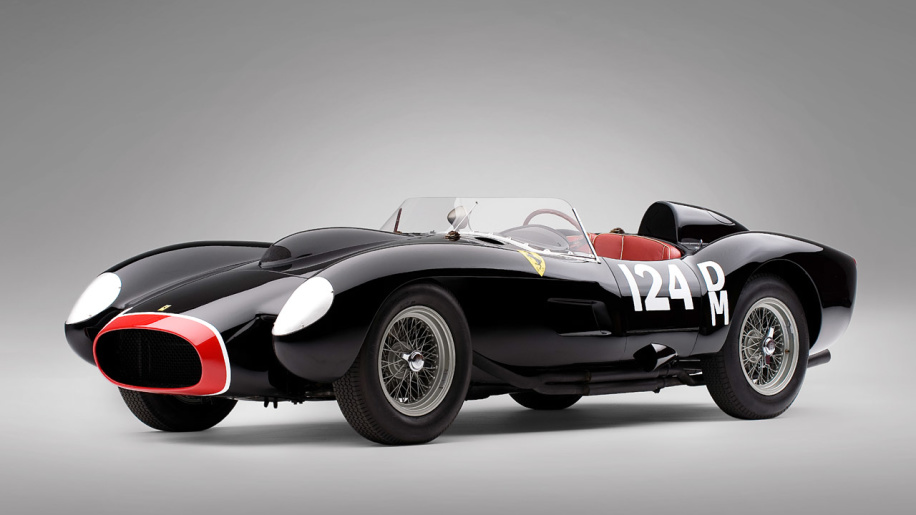

| Model | Year | 0-60mph | Top Speed |
|---|---|---|---|
| 250 TR | 1958 | ~ 6 sec | 168 |
The Ferrari TR, or 250 Testa Rossa, is a race car model built by Ferrari in the 1950s and 1960s. They were introduced at the end of the 1957 season in preparation for the regulations restricting sports cars to 3 litres for Le Mans and World Sports Car Championship races from 1958. These cars dominated their competitors, with variations winning 10 World Sports Car Championship races including the 24 Hours of Le Mans in 1958, 1960, and 1961, the Sebring 12 Hours in 1958, 1959 and 1961, the Targa Florio in 1958, the Buenos Aires 1000Km in 1958 and 1960 and the Pescara 4 Hours in 1961. These results led to World Sports Car Championship titles in 1958, 1960 and 1961 with only the Aston Martin DBR1 defeating the Testa Rossa at the Nurburgring in 1958 and at Le Mans, the Nurburgring and Tourist Trophy and the World Championship in 1959. They were closely related to the rest of the Ferrari 250 line, including the 250 GTO.
 The Sequel